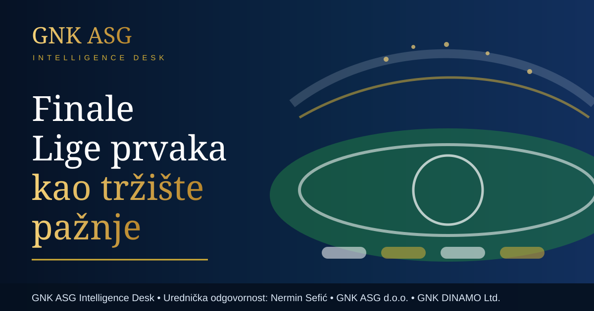

Finale Lige prvaka kao tržište pažnje
Finale Lige prvaka između PSG-a i Arsenala u Budimpešti nije samo utakmica. To je europski poslovni događaj koji spaja sport, medijska prava, sigurnost, turizam, gradski promet i globalnu pažnju.

Autor: GNK ASG Intelligence Desk · Urednička odgovornost: Nermin Sefić · Izdavač: GNK ASG d.o.o. · Javni sadržajni okvir: GNK DINAMO Ltd.
Urednička odgovornost: Nermin Sefić
Izdavač: GNK ASG d.o.o.
Okvir javnog sadržaja: GNK DINAMO Ltd.
Finale UEFA Champions League danas funkcionira kao velika medijska i poslovna platforma. Sportski rezultat je središnji događaj, ali oko njega se stvara mnogo širi ekosustav: televizijski prijenosi, digitalni sadržaj, turistička potrošnja, hotelski kapaciteti, sigurnosna organizacija, sponzorska aktivacija i globalno praćenje navijača.
Reuters je 30. svibnja 2026. izvijestio o finalu PSG-a i Arsenala, sastavima momčadi i kasnijem razvoju utakmice. UEFA je kroz službene kanale najavila utakmicu u Budimpešti kao završni događaj europske klupske sezone. Ovaj tekst ne koristi Wikipediju, nego javne objave Reutersa, UEFA-e i međunarodnih sportskih medija kao informativni okvir.
Za PSG, nastup u finalu znači potvrdu da sportski projekt ima međunarodnu težinu i izvan nacionalnog tržišta. Trofej ili samo završnica takvog natjecanja utječu na vrijednost brenda, pregovaračku snagu prema sponzorima, globalnu bazu navijača i tržišnu vrijednost igrača. Za Arsenal, finale je dokaz kontinuiteta i povratka na najvišu europsku razinu, što ima učinak i na poslovnu sliku kluba.
Budimpešta kao grad domaćin također dobiva vlastiti test. Veliki sportski događaj pokazuje koliko grad može upravljati prometom, policijskim kapacitetima, smještajem, javnim prostorima i navijačkim tokovima. Uspješna organizacija šalje poruku da grad može preuzeti i druge velike međunarodne manifestacije.
Najvažnija poslovna pouka je da suvremeni sport više nije odvojen od tržišta. On je istodobno sadržaj, emocija, infrastruktura, turizam i podaci. Finale Lige prvaka zato je jedna od najjasnijih slika europske ekonomije pažnje.